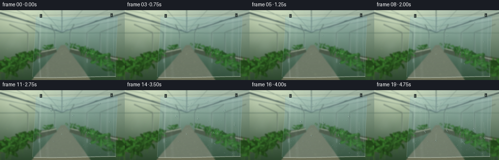
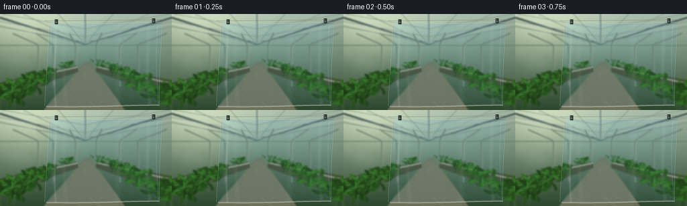

CODING AGENTS AS PIXEL WORLD MODELS
traex/GPT-6.1-Sol · phygen_104
点击播放 · 原生 RGB 像素
逐轮保存的候选
回放视频、检查图与代码变化。
每份候选均可单独播放。实际图片检查记录在下方工具轨迹中。
候选 01播放与检查图
点击播放 · 原生 RGB 像素


展开代码变化
--- 上一保存版本
+++ 本次保存版本
@@ -0,0 +1,269 @@
+"""Procedural RGB timelapse: vapor condensing on a suspended cool plastic film.
+Only numpy and Pillow are used; all geometry, illumination and motion are local.
+"""
+from pathlib import Path
+import math
+import numpy as np
+from PIL import Image, ImageDraw, ImageFilter
+import artifact_io
+
+ROOT = Path(__file__).resolve().parent
+W, H, S = 256, 144, 4
+WW, HH = W*S, H*S
+rng = np.random.default_rng(104)
+Y, X = np.mgrid[0:HH, 0:WW].astype(np.float32) / S
+
+def blend(a, col, alpha):
+ return a*(1-alpha[..., None]) + np.asarray(col, np.float32)*alpha[..., None]
+
+def line(draw, coords, fill, width=1):
+ draw.line([(int(x*S), int(y*S)) for x,y in coords], fill=fill, width=max(1,int(width*S)))
+
+def ellipse(draw, box, fill):
+ draw.ellipse(tuple(int(v*S) for v in box), fill=fill)
+
+# Sunlit glasshouse and its long perspective aisle, out of the focal plane.
+b = np.zeros((HH, WW, 3), np.float32)
+h = np.clip(Y / H, 0, 1)
+for c, top, bottom in [(0,174,48),(1,195,76),(2,176,49)]:
+ b[:,:,c] = top*(1-h) + bottom*h
+sun = np.exp(-((X-33)/83)**2-((Y-12)/49)**2)
+b += sun[...,None]*np.array([47,42,28])
+b -= (np.exp(-((X-128)/80)**2-((Y-100)/36)**2)*10)[...,None]
+im = Image.fromarray(np.uint8(np.clip(b,0,255)))
+d = ImageDraw.Draw(im, 'RGBA')
+# Transparent glazing polygons and softly lit panes.
+for k in range(9):
+ x=-110+k*55
+ pts=[(128,44),(x,-8),(x+53,-8)]
+ d.polygon([(int(a*S),int(b*S)) for a,b in pts], fill=(221,229,208,13 if k%2 else 28))
+# Receding ridge and overhead galvanized greenhouse members.
+line(d, [(0,5),(127,45),(256,5)], (67,87,80,255), 2.9)
+line(d, [(0,3.5),(127,43.5),(256,3.5)], (224,235,219,255), 0.8)
+line(d, [(127,44),(127,0)], (118,139,128,255), 2)
+for x in [-80,-24,35,87,169,221,280,336]:
+ line(d, [(x,0),(127,45)], (109,132,120,210), 1.2)
+ line(d, [(x+1,0),(128,44)], (230,237,217,170), .35)
+for y in [16,28,36]:
+ line(d, [(0,y-17),(127,y+6),(256,y-17)], (114,137,123,210), 1.2)
+# Rear wall and support pillars, asymmetric to avoid a diagrammatic appearance.
+line(d, [(0,47),(256,47)], (108,133,113,220), 1.9)
+for x in [19,54,103,153,205,249]:
+ xx = 128+(x-128)*.65
+ line(d, [(x,29),(xx,46),(xx,108)], (99,118,103,230), 2.1)
+ line(d, [(x+1,29),(xx+1,46),(xx+1,108)], (189,202,178,210), .55)
+# Gravel aisle and raised growing benches.
+d.polygon([(int(x*S),int(y*S)) for x,y in [(126,72),(134,72),(186,144),(65,144)]], fill=(114,117,92,255))
+for k in range(800):
+ y=rng.uniform(78,144); spread=(y-72)*.8
+ x=130+rng.uniform(-spread,spread)
+ r=rng.uniform(.12,.55)*(y/144)
+ ellipse(d, [x-r,y-r*.65,x+r,y+r*.65], (170,167,138,int(rng.integers(30,95))))
+for coords in [[(0,103),(114,77),(116,86),(0,131)],[(144,77),(256,99),(256,126),(143,87)]]:
+ d.polygon([(int(x*S),int(y*S)) for x,y in coords], fill=(73,82,60,255))
+line(d,[(0,106),(115,79)],(171,173,142,255),2.2)
+line(d,[(144,79),(256,104)],(165,169,142,255),2)
+
+# Leaf geometry with continuous lighting rather than flat illustrative colors.
+bg = np.asarray(im).astype(np.float32).copy()
+def leaf(arr, cx, cy, length, width, angle, col, seed):
+ co,si=np.cos(angle),np.sin(angle)
+ radius=length+width
+ x0=max(0,int((cx-radius)*S)); x1=min(WW,int((cx+radius)*S)+1)
+ y0=max(0,int((cy-radius)*S)); y1=min(HH,int((cy+radius)*S)+1)
+ if x1<=x0 or y1<=y0:return
+ xx=X[y0:y1,x0:x1]-cx; yy=Y[y0:y1,x0:x1]-cy
+ u=xx*co+yy*si; v=-xx*si+yy*co
+ # Pointed, curved blade with an asymmetric central rib.
+ bend=.11*length*(1-(u/(length/2))**2)
+ vv=v-bend
+ q=(u/(length/2))**2+(vv/(width/2))**2
+ a=np.clip((1-q)*12,0,1)
+ lam=.74+.26*np.sqrt(np.clip(1-q,0,1))-.12*vv/max(width,1)
+ rib=np.exp(-(vv/(.10+width*.018))**2)*.17
+ veins=.035*np.cos(u*2.2+np.abs(vv)*2.9)*np.exp(-abs(vv)/max(width,1))
+ colors=np.asarray(col)[None,None,:]*(lam+rib+veins)[...,None]
+ patch=arr[y0:y1,x0:x1]
+ arr[y0:y1,x0:x1]=patch*(1-a[...,None])+colors*a[...,None]
+
+# Receding lush crop rows: soft foliage, distinct leaves close to the edges.
+for side in [0,1]:
+ for k in range(50):
+ depth=rng.uniform(0,1)
+ cy=72+depth*64
+ cx=(109-depth*109 if side==0 else 147+depth*110)+rng.normal(0,8)
+ size=2.8+depth*13
+ stem=Image.fromarray(np.uint8(np.clip(bg,0,255))); dd=ImageDraw.Draw(stem)
+ line(dd,[(cx,cy+size),(cx+rng.uniform(-3,3),cy-size)],(62,100,48),.35+depth*.7)
+ bg=np.asarray(stem).astype(np.float32).copy()
+ for j in range(rng.integers(4,8)):
+ lc=cx+rng.normal(0,size*.6); ly=cy-rng.uniform(0,size*1.6)
+ ang=rng.uniform(-2.9,.25)
+ green=rng.uniform(.65,1.3)
+ leaf(bg,lc,ly,size*rng.uniform(.65,1.55),size*rng.uniform(.27,.55),ang,
+ np.array([49,102,37])*green,k)
+# Highlights floating through the defocused leaves.
+for k in range(70):
+ cx=rng.uniform(0,256);cy=rng.uniform(53,139)
+ r=rng.uniform(.6,2.7)
+ glow=np.exp(-((X-cx)/r)**2-((Y-cy)/r)**2)*rng.uniform(.01,.07)
+ bg=blend(bg,[223,224,155],glow)
+bg = np.asarray(Image.fromarray(np.uint8(np.clip(bg,0,255))).filter(ImageFilter.GaussianBlur(1.05*S))).astype(np.float32)
+
+# Flexible film, suspended from two small clips. Its edges are thin and curled.
+left = 73 - .045*(Y-12) + .8*np.sin(Y*.037)
+right = 241 - .033*(Y-12) + .55*np.sin(Y*.052)
+top = 13.5 - .009*(X-73) + .65*np.sin((X-73)/59)
+bottom = 139.0 - .009*(X-73) + .65*np.sin((X-70)/33)
+edge=np.minimum.reduce([X-left,right-X,Y-top,bottom-Y])
+sheetmask=np.clip(edge*S,0,1)
+# Refracted scene through slightly curved, transparent plastic.
+fold = .65*np.sin(X*.094+Y*.016)+.26*np.sin(X*.23-Y*.029)
+ix=np.clip(np.rint((X+fold)*S),0,WW-1).astype(int)
+iy=np.clip(np.rint((Y+.25*np.sin(X*.1))*S),0,HH-1).astype(int)
+transmitted=bg[iy,ix]*np.array([.92,.97,1.015])+np.array([5,7,9])
+base=bg*(1-sheetmask[...,None])+transmitted*sheetmask[...,None]
+# Long irregular highlight ribbons and subtle tension wrinkles.
+foldlights=np.zeros((HH,WW),np.float32)
+for cx,amp,wide in [(82,.14,1.7),(96,.045,3),(176,.045,5),(221,.085,2.6),(234,.12,.75)]:
+ center=cx+1.3*np.sin(Y*.043+cx)+.014*(Y-65)
+ foldlights+=amp*np.exp(-((X-center)/wide)**2)
+base=blend(base,[224,235,231],np.clip(foldlights,0,.28)*sheetmask)
+# Fine texture in the polyethylene, temporally stable.
+texture=rng.normal(0,.45,(HH,WW,1)).astype(np.float32)
+base+=texture*sheetmask[...,None]
+
+# Condensation nuclei with persistent positions and smooth growth.
+nuclei=[]
+for k in range(380):
+ x=rng.uniform(78,233);y=rng.uniform(19,134)
+ birth=rng.uniform(.25,3.15)
+ # Earliest condensation occurs at the incoming mist-facing left half.
+ birth+=.003*(x-80)
+ if k<26: birth=rng.uniform(-.25,.45)
+ r=rng.uniform(.31,.85)
+ if k%13==0:r=rng.uniform(.9,1.5)
+ nuclei.append((x,y,birth,r,rng.uniform(.85,1.25)))
+# Larger beads cross a gravity threshold and slide, collecting water as they go.
+runners=[(105,35,2.05,2.15,11.0),(150,53,2.7,2.0,10.0),
+ (205,26,2.45,2.1,15.0),(183,88,3.4,1.9,12.0),
+ (127,91,3.55,1.8,10.0),(225,66,2.8,1.8,11.5)]
+
+# Analytic refractive droplets: bulged scene, rim, reflected bright window,
+# and a very slight bottom-edge shadow, not opaque painted circles.
+def drop(arr, underlying, cx, cy, rx, ry, strength=1.0):
+ if rx<.12:return
+ x0=max(0,int((cx-rx-1)*S)); x1=min(WW,int((cx+rx+1)*S)+1)
+ y0=max(0,int((cy-ry-1)*S)); y1=min(HH,int((cy+ry+1)*S)+1)
+ xx=X[y0:y1,x0:x1]; yy=Y[y0:y1,x0:x1]
+ u=(xx-cx)/rx;v=(yy-cy)/ry
+ q=u*u+v*v
+ a=np.clip((1-q)*S*min(rx,ry)*1.2+.3,0,1)*strength
+ if not np.any(a):return
+ z=np.sqrt(np.clip(1-q,0,1))
+ # Lens magnification and vertically inverted garden colors inside the bead.
+ sx=np.clip(((cx+u*rx*.65 + u*z*1.4)*S).astype(int),0,WW-1)
+ sy=np.clip(((cy-v*ry*.55 + v*z*.9)*S).astype(int),0,HH-1)
+ refr=underlying[sy,sx].copy()
+ refr=refr*.82+np.array([16,23,22])
+ rim=np.exp(-((np.sqrt(q)-.87)/.10)**2)
+ refr-=rim[...,None]*np.array([26,30,25])
+ # Gloss has an upper left arc and a secondary transmitted caustic.
+ spec=np.exp(-((u+.32)/.22)**2-((v+.46)/.15)**2)
+ arc=np.exp(-((np.sqrt((u+.10)**2+(v+.03)**2)-.77)/.085)**2)*np.clip((-u-v)/1.5,0,.9)
+ shine=np.clip(spec*.90+arc*.45,0,.92)
+ refr=blend(refr,[250,255,249],shine)
+ caustic=np.exp(-((u-.13)/.42)**2-((v-.52)/.18)**2)*.50
+ refr=blend(refr,[206,229,199],caustic)
+ patch=arr[y0:y1,x0:x1]
+ arr[y0:y1,x0:x1]=patch*(1-a[...,None])+refr*a[...,None]
+
+
+def edge_details(arr):
+ im=Image.fromarray(np.uint8(np.clip(arr,0,255)))
+ dd=ImageDraw.Draw(im,'RGBA')
+ # The sagging thin cut edge and rolled bottom hem reveal flexible film.
+ for side in [0,1]:
+ pts=[]
+ for y in np.linspace(14,138,120):
+ x=(73-.045*(y-12)+.8*np.sin(y*.037) if side==0 else 241-.033*(y-12)+.55*np.sin(y*.052))
+ pts.append((x,y))
+ line(dd,pts,(223,235,231,180),.45)
+ line(dd,[(x+.5,y) for x,y in pts],(73,105,98,120),.25)
+ pts=[(x,139-.009*(x-73)+.65*np.sin((x-70)/33)) for x in np.linspace(69,237,180)]
+ line(dd,pts,(221,230,214,190),.85)
+ line(dd,[(x,y-1.3) for x,y in pts],(222,232,225,70),.65)
+ # One fine horizontal tension crease along the clipped upper edge.
+ line(dd,[(73,13.5),(100,13.1),(168,14.0),(240,12.0)],(230,240,232,180),.55)
+ # Support cable and clips are behind the film and stationary.
+ line(dd,[(67,10),(246,8.4)],(89,104,96,255),.7)
+ line(dd,[(67,9.5),(246,8)],(198,207,192,220),.3)
+ for cx,cy in [(84,11),(229,9.6)]:
+ dd.rounded_rectangle((int((cx-2.3)*S),int((cy-3)*S),int((cx+2.3)*S),int((cy+4.3)*S)),radius=int(.7*S), fill=(49,60,57,255))
+ line(dd,[(cx-1.4,cy-2.3),(cx-1.4,cy+3.3)],(133,146,138,255),.55)
+ ellipse(dd,[cx-.55,cy+.8,cx+.55,cy+1.9],(163,173,163,255))
+ return np.asarray(im).astype(np.float32)
+
+frames=[]
+for frame in range(20):
+ t=frame/4
+ arr=base.copy()
+ # Mist enters from the left; it swirls and settles toward the cold surface.
+ vapor=np.zeros((HH,WW),np.float32)
+ for j in range(11):
+ phase=t*.43+j*.91
+ cx=4+j*7.2+12*np.sin(phase*.75)
+ cy=48+29*np.sin(j*1.76+phase*.65)
+ sx=15+6*np.sin(j+.5)**2
+ sy=9+6*np.cos(j*1.3)**2
+ cloud=np.exp(-((X-cx)/sx)**2-((Y-cy)/sy)**2)
+ vapor+=cloud*(.035+.014*np.sin(t*1.2+j))
+ # Thin rising tendrils, all continuous across frames.
+ for j in range(4):
+ center=20+j*15+11*np.sin(Y*.045-t*.6+j)
+ vapor+=.018*np.exp(-((X-center)/7)**2)*np.exp(-((Y-(67+j*7))/43)**2)
+ arr=blend(arr,[214,229,224],np.clip(vapor,0,.26))
+ # Contact first produces a fine, scattering film, followed by resolved beads.
+ development=np.clip((t-.25)/3.5,0,1)
+ fog=.075*development*sheetmask*(.65+.35*np.exp(-((X-113)/54)**2))
+ arr=blend(arr,[196,216,208],fog)
+ under=arr.copy()
+ # Wet trails are left only behind sliding droplets.
+ positions=[]
+ for idx,(cx,cy,trigger,r,speed) in enumerate(runners):
+ age=max(0,t-trigger)
+ dy=speed*age**1.55
+ ny=cy+dy
+ nr=r*(.40+.60*np.clip(t/trigger,0,1))+.08*age
+ if age>0:
+ xx=cx+.45*np.sin((Y-cy)*.09+idx)-.45*np.sin(idx)
+ along=(Y>=cy)&(Y<=min(ny,137))
+ trail=np.exp(-((X-xx)/.52)**2)*along*sheetmask
+ # Slim transparent stream with narrow light-catching edges.
+ arr=blend(arr,[135,164,152],trail*.16)
+ highlight=np.exp(-((X-xx+.45)/.19)**2)*along*sheetmask
+ arr=blend(arr,[224,239,229],highlight*.25)
+ if ny < 135:
+ positions.append((cx+.45*np.sin(dy*.09+idx)-.45*np.sin(idx),ny,nr,nr*(1+.28*min(age,.8))))
+ for x,y,birth,r,ratio in nuclei:
+ age=t-birth
+ if age<0:continue
+ radius=r*(.22+.80*(1-np.exp(-age/1.55)))
+ # Small drops along runnels are collected instead of staying visible.
+ absorbed=False
+ for cx,cy,trigger,rr,speed in runners:
+ ny=cy+speed*max(0,t-trigger)**1.55
+ if t>trigger and abs(x-cx)<rr*.92 and cy-rr<y<ny+rr:
+ absorbed=True;break
+ if absorbed:continue
+ drop(arr,under,x,y,radius,radius*ratio,min(1,age*3.5))
+ for x,y,rx,ry in positions:drop(arr,under,x,y,rx,ry)
+ arr=edge_details(arr)
+ # Soft photographic corner falloff and slight cool/warm daylight balance.
+ vignette=1-.10*((X-134)/178)**2-.06*((Y-69)/103)**2
+ arr*=vignette[...,None]
+ arr=np.uint8(np.clip(arr,0,255))
+ out=Image.fromarray(arr).resize((W,H),Image.Resampling.LANCZOS)
+ frames.append(np.asarray(out))
+artifact_io.save(np.stack(frames).astype(np.uint8), ROOT)
+print(f'Saved {len(frames)} RGB frames, {W}x{H}, 4 fps to {ROOT}')
可观测工具轨迹
实际执行的命令与返回图片。
命令 1exit 0
/bin/bash -lc 'ls -la && cat prompt.txt && cat GENERATION_RULES.md && cat task_spec.json'
命令 2exit 0
/bin/bash -lc "cat artifact_io.py && python - <<'PY'
import numpy, PIL
print('numpy and PIL available')
PY"命令 3exit 0
/bin/bash -lc "cat > generate.py <<'PY'
\"\"\"Procedural RGB timelapse: vapor condensing on a suspended cool plastic film.
Only numpy and Pillow are used; all geometry, illumination and motion are local.
\"\"\"
from pathlib import Path
import math
import numpy as np
from PIL import Image, ImageDraw, ImageFilter
import artifact_io
ROOT = Path(__file__).resolve().parent
W, H, S = 256, 144, 4
WW, HH = W*S, H*S
rng = np.random.default_rng(104)
Y, X = np.mgrid[0:HH, 0:WW].astype(np.float32) / S
def blend(a, col, alpha):
return a*(1-alpha[..., None]) + np.asarray(col, np.float32)*alpha[..., None]
def line(draw, coords, fill, width=1):
draw.line([(int(x*S), int(y*S)) for x,y in coords], fill=fill, width=max(1,int(width*S)))
def ellipse(draw, box, fill):
draw.ellipse(tuple(int(v*S) for v in box), fill=fill)
# Sunlit glasshouse and its long perspective aisle, out of the focal plane.
b = np.zeros((HH, WW, 3), np.float32)
h = np.clip(Y / H, 0, 1)
for c, top, bottom in [(0,174,48),(1,195,76),(2,176,49)]:
b[:,:,c] = top*(1-h) + bottom*h
sun = np.exp(-((X-33)/83)**2-((Y-12)/49)**2)
b += sun[...,None]*np.array([47,42,28])
b -= (np.exp(-((X-128)/80)**2-((Y-100)/36)**2)*10)[...,None]
im = Image.fromarray(np.uint8(np.clip(b,0,255)))
d = ImageDraw.Draw(im, 'RGBA')
# Transparent glazing polygons and softly lit panes.
for k in range(9):
x=-110+k*55
pts=[(128,44),(x,-8),(x+53,-8)]
d.polygon([(int(a*S),int(b*S)) for a,b in pts], fill=(221,229,208,13 if k%2 else 28))
# Receding ridge and overhead galvanized greenhouse members.
line(d, [(0,5),(127,45),(256,5)], (67,87,80,255), 2.9)
line(d, [(0,3.5),(127,43.5),(256,3.5)], (224,235,219,255), 0.8)
line(d, [(127,44),(127,0)], (118,139,128,255), 2)
for x in [-80,-24,35,87,169,221,280,336]:
line(d, [(x,0),(127,45)], (109,132,120,210), 1.2)
line(d, [(x+1,0),(128,44)], (230,237,217,170), .35)
for y in [16,28,36]:
line(d, [(0,y-17),(127,y+6),(256,y-17)], (114,137,123,210), 1.2)
# Rear wall and support pillars, asymmetric to avoid a diagrammatic appearance.
line(d, [(0,47),(256,47)], (108,133,113,220), 1.9)
for x in [19,54,103,153,205,249]:
xx = 128+(x-128)*.65
line(d, [(x,29),(xx,46),(xx,108)], (99,118,103,230), 2.1)
line(d, [(x+1,29),(xx+1,46),(xx+1,108)], (189,202,178,210), .55)
# Gravel aisle and raised growing benches.
d.polygon([(int(x*S),int(y*S)) for x,y in [(126,72),(134,72),(186,144),(65,144)]], fill=(114,117,92,255))
for k in range(800):
y=rng.uniform(78,144); spread=(y-72)*.8
x=130+rng.uniform(-spread,spread)
r=rng.uniform(.12,.55)*(y/144)
ellipse(d, [x-r,y-r*.65,x+r,y+r*.65], (170,167,138,int(rng.integers(30,95))))
for coords in [[(0,103),(114,77),(116,86),(0,131)],[(144,77),(256,99),(256,126),(143,87)]]:
d.polygon([(int(x*S),int(y*S)) for x,y in coords], fill=(73,82,60,255))
line(d,[(0,106),(115,79)],(171,173,142,255),2.2)
line(d,[(144,79),(256,104)],(165,169,142,255),2)
# Leaf geometry with continuous lighting rather than flat illustrative colors.
bg = np.asarray(im).astype(np.float32).copy()
def leaf(arr, cx, cy, length, width, angle, col, seed):
co,si=np.cos(angle),np.sin(angle)
radius=length+width
x0=max(0,int((cx-radius)*S)); x1=min(WW,int((cx+radius)*S)+1)
y0=max(0,int((cy-radius)*S)); y1=min(HH,int((cy+radius)*S)+1)
if x1<=x0 or y1<=y0:return
xx=X[y0:y1,x0:x1]-cx; yy=Y[y0:y1,x0:x1]-cy
u=xx*co+yy*si; v=-xx*si+yy*co
# Pointed, curved blade with an asymmetric central rib.
bend=.11*length*(1-(u/(length/2))**2)
vv=v-bend
q=(u/(length/2))**2+(vv/(width/2))**2
a=np.clip((1-q)*12,0,1)
lam=.74+.26*np.sqrt(np.clip(1-q,0,1))-.12*vv/max(width,1)
rib=np.exp(-(vv/(.10+width*.018))**2)*.17
veins=.035*np.cos(u*2.2+np.abs(vv)*2.9)*np.exp(-abs(vv)/max(width,1))
colors=np.asarray(col)[None,None,:]*(lam+rib+veins)[...,None]
patch=arr[y0:y1,x0:x1]
arr[y0:y1,x0:x1]=patch*(1-a[...,None])+colors*a[...,None]
# Receding lush crop rows: soft foliage, distinct leaves close to the edges.
for side in [0,1]:
for k in range(50):
depth=rng.uniform(0,1)
cy=72+depth*64
cx=(109-depth*109 if side==0 else 147+depth*110)+rng.normal(0,8)
size=2.8+depth*13
stem=Image.fromarray(np.uint8(np.clip(bg,0,255))); dd=ImageDraw.Draw(stem)
line(dd,[(cx,cy+size),(cx+rng.uniform(-3,3),cy-size)],(62,100,48),.35+depth*.7)
bg=np.asarray(stem).astype(np.float32).copy()
for j in range(rng.integers(4,8)):
lc=cx+rng.normal(0,size*.6); ly=cy-rng.uniform(0,size*1.6)
ang=rng.uniform(-2.9,.25)
green=rng.uniform(.65,1.3)
leaf(bg,lc,ly,size*rng.uniform(.65,1.55),size*rng.uniform(.27,.55),ang,
np.array([49,102,37])*green,k)
# Highlights floating through the defocused leaves.
for k in range(70):
cx=rng.uniform(0,256);cy=rng.uniform(53,139)
r=rng.uniform(.6,2.7)
glow=np.exp(-((X-cx)/r)**2-((Y-cy)/r)**2)*rng.uniform(.01,.07)
bg=blend(bg,[223,224,155],glow)
bg = np.asarray(Image.fromarray(np.uint8(np.clip(bg,0,255))).filter(ImageFilter.GaussianBlur(1.05*S))).astype(np.float32)
# Flexible film, suspended from two small clips. Its edges are thin and curled.
left = 73 - .045*(Y-12) + .8*np.sin(Y*.037)
right = 241 - .033*(Y-12) + .55*np.sin(Y*.052)
top = 13.5 - .009*(X-73) + .65*np.sin((X-73)/59)
bottom = 139.0 - .009*(X-73) + .65*np.sin((X-70)/33)
edge=np.minimum.reduce([X-left,right-X,Y-top,bottom-Y])
sheetmask=np.clip(edge*S,0,1)
# Refracted scene through slightly curved, transparent plastic.
fold = .65*np.sin(X*.094+Y*.016)+.26*np.sin(X*.23-Y*.029)
ix=np.clip(np.rint((X+fold)*S),0,WW-1).astype(int)
iy=np.clip(np.rint((Y+.25*np.sin(X*.1))*S),0,HH-1).astype(int)
transmitted=bg[iy,ix]*np.array([.92,.97,1.015])+np.array([5,7,9])
base=bg*(1-sheetmask[...,None])+transmitted*sheetmask[...,None]
# Long irregular highlight ribbons and subtle tension wrinkles.
foldlights=np.zeros((HH,WW),np.float32)
for cx,amp,wide in [(82,.14,1.7),(96,.045,3),(176,.045,5),(221,.085,2.6),(234,.12,.75)]:
center=cx+1.3*np.sin(Y*.043+cx)+.014*(Y-65)
foldlights+=amp*np.exp(-((X-center)/wide)**2)
base=blend(base,[224,235,231],np.clip(foldlights,0,.28)*sheetmask)
# Fine texture in the polyethylene, temporally stable.
texture=rng.normal(0,.45,(HH,WW,1)).astype(np.float32)
base+=texture*sheetmask[...,None]
# Condensation nuclei with persistent positions and smooth growth.
nuclei=[]
for k in range(380):
x=rng.uniform(78,233);y=rng.uniform(19,134)
birth=rng.uniform(.25,3.15)
# Earliest condensation occurs at the incoming mist-facing left half.
birth+=.003*(x-80)
if k<26: birth=rng.uniform(-.25,.45)
r=rng.uniform(.31,.85)
if k%13==0:r=rng.uniform(.9,1.5)
nuclei.append((x,y,birth,r,rng.uniform(.85,1.25)))
# Larger beads cross a gravity threshold and slide, collecting water as they go.
runners=[(105,35,2.05,2.15,11.0),(150,53,2.7,2.0,10.0),
(205,26,2.45,2.1,15.0),(183,88,3.4,1.9,12.0),
(127,91,3.55,1.8,10.0),(225,66,2.8,1.8,11.5)]
# Analytic refractive droplets: bulged scene, rim, reflected bright window,
# and a very slight bottom-edge shadow, not opaque painted circles.
def drop(arr, underlying, cx, cy, rx, ry, strength=1.0):
if rx<.12:return
x0=max(0,int((cx-rx-1)*S)); x1=min(WW,int((cx+rx+1)*S)+1)
y0=max(0,int((cy-ry-1)*S)); y1=min(HH,int((cy+ry+1)*S)+1)
xx=X[y0:y1,x0:x1]; yy=Y[y0:y1,x0:x1]
u=(xx-cx)/rx;v=(yy-cy)/ry
q=u*u+v*v
a=np.clip((1-q)*S*min(rx,ry)*1.2+.3,0,1)*strength
if not np.any(a):return
z=np.sqrt(np.clip(1-q,0,1))
# Lens magnification and vertically inverted garden colors inside the bead.
sx=np.clip(((cx+u*rx*.65 + u*z*1.4)*S).astype(int),0,WW-1)
sy=np.clip(((cy-v*ry*.55 + v*z*.9)*S).astype(int),0,HH-1)
refr=underlying[sy,sx].copy()
refr=refr*.82+np.array([16,23,22])
rim=np.exp(-((np.sqrt(q)-.87)/.10)**2)
refr-=rim[...,None]*np.array([26,30,25])
# Gloss has an upper left arc and a secondary transmitted caustic.
spec=np.exp(-((u+.32)/.22)**2-((v+.46)/.15)**2)
arc=np.exp(-((np.sqrt((u+.10)**2+(v+.03)**2)-.77)/.085)**2)*np.clip((-u-v)/1.5,0,.9)
shine=np.clip(spec*.90+arc*.45,0,.92)
refr=blend(refr,[250,255,249],shine)
caustic=np.exp(-((u-.13)/.42)**2-((v-.52)/.18)**2)*.50
refr=blend(refr,[206,229,199],caustic)
patch=arr[y0:y1,x0:x1]
arr[y0:y1,x0:x1]=patch*(1-a[...,None])+refr*a[...,None]
def edge_details(arr):
im=Image.fromarray(np.uint8(np.clip(arr,0,255)))
dd=ImageDraw.Draw(im,'RGBA')
# The sagging thin cut edge and rolled bottom hem reveal flexible film.
for side in [0,1]:
pts=[]
for y in np.linspace(14,138,120):
x=(73-.045*(y-12)+.8*np.sin(y*.037) if side==0 else 241-.033*(y-12)+.55*np.sin(y*.052))
pts.append((x,y))
line(dd,pts,(223,235,231,180),.45)
line(dd,[(x+.5,y) for x,y in pts],(73,105,98,120),.25)
pts=[(x,139-.009*(x-73)+.65*np.sin((x-70)/33)) for x in np.linspace(69,237,180)]
line(dd,pts,(221,230,214,190),.85)
line(dd,[(x,y-1.3) for x,y in pts],(222,232,225,70),.65)
# One fine horizontal tension crease along the clipped upper edge.
line(dd,[(73,13.5),(100,13.1),(168,14.0),(240,12.0)],(230,240,232,180),.55)
# Support cable and clips are behind the film and stationary.
line(dd,[(67,10),(246,8.4)],(89,104,96,255),.7)
line(dd,[(67,9.5),(246,8)],(198,207,192,220),.3)
for cx,cy in [(84,11),(229,9.6)]:
dd.rounded_rectangle((int((cx-2.3)*S),int((cy-3)*S),int((cx+2.3)*S),int((cy+4.3)*S)),radius=int(.7*S), fill=(49,60,57,255))
line(dd,[(cx-1.4,cy-2.3),(cx-1.4,cy+3.3)],(133,146,138,255),.55)
ellipse(dd,[cx-.55,cy+.8,cx+.55,cy+1.9],(163,173,163,255))
return np.asarray(im).astype(np.float32)
frames=[]
for frame in range(20):
t=frame/4
arr=base.copy()
# Mist enters from the left; it swirls and settles toward the cold surface.
vapor=np.zeros((HH,WW),np.float32)
for j in range(11):
phase=t*.43+j*.91
cx=4+j*7.2+12*np.sin(phase*.75)
cy=48+29*np.sin(j*1.76+phase*.65)
sx=15+6*np.sin(j+.5)**2
sy=9+6*np.cos(j*1.3)**2
cloud=np.exp(-((X-cx)/sx)**2-((Y-cy)/sy)**2)
vapor+=cloud*(.035+.014*np.sin(t*1.2+j))
# Thin rising tendrils, all continuous across frames.
for j in range(4):
center=20+j*15+11*np.sin(Y*.045-t*.6+j)
vapor+=.018*np.exp(-((X-center)/7)**2)*np.exp(-((Y-(67+j*7))/43)**2)
arr=blend(arr,[214,229,224],np.clip(vapor,0,.26))
# Contact first produces a fine, scattering film, followed by resolved beads.
development=np.clip((t-.25)/3.5,0,1)
fog=.075*development*sheetmask*(.65+.35*np.exp(-((X-113)/54)**2))
arr=blend(arr,[196,216,208],fog)
under=arr.copy()
# Wet trails are left only behind sliding droplets.
positions=[]
for idx,(cx,cy,trigger,r,speed) in enumerate(runners):
age=max(0,t-trigger)
dy=speed*age**1.55
ny=cy+dy
nr=r*(.40+.60*np.clip(t/trigger,0,1))+.08*age
if age>0:
xx=cx+.45*np.sin((Y-cy)*.09+idx)-.45*np.sin(idx)
along=(Y>=cy)&(Y<=min(ny,137))
trail=np.exp(-((X-xx)/.52)**2)*along*sheetmask
# Slim transparent stream with narrow light-catching edges.
arr=blend(arr,[135,164,152],trail*.16)
highlight=np.exp(-((X-xx+.45)/.19)**2)*along*sheetmask
arr=blend(arr,[224,239,229],highlight*.25)
if ny < 135:
positions.append((cx+.45*np.sin(dy*.09+idx)-.45*np.sin(idx),ny,nr,nr*(1+.28*min(age,.8))))
for x,y,birth,r,ratio in nuclei:
age=t-birth
if age<0:continue
radius=r*(.22+.80*(1-np.exp(-age/1.55)))
# Small drops along runnels are collected instead of staying visible.
absorbed=False
for cx,cy,trigger,rr,speed in runners:
ny=cy+speed*max(0,t-trigger)**1.55
if t>trigger and abs(x-cx)<rr*.92 and cy-rr<y<ny+rr:
absorbed=True;break
if absorbed:continue
drop(arr,under,x,y,radius,radius*ratio,min(1,age*3.5))
for x,y,rx,ry in positions:drop(arr,under,x,y,rx,ry)
arr=edge_details(arr)
# Soft photographic corner falloff and slight cool/warm daylight balance.
vignette=1-.10*((X-134)/178)**2-.06*((Y-69)/103)**2
arr*=vignette[...,None]
arr=np.uint8(np.clip(arr,0,255))
out=Image.fromarray(arr).resize((W,H),Image.Resampling.LANCZOS)
frames.append(np.asarray(out))
artifact_io.save(np.stack(frames).astype(np.uint8), ROOT)
print(f'Saved {len(frames)} RGB frames, {W}x{H}, 4 fps to {ROOT}')
PY
python generate.py"命令 4exit 2
/bin/bash -lc "python - <<'PY'
import numpy as np
from pathlib import Path
from PIL import Image
p=Path('.')
f=sorted((p/'frames').glob('*.png'))
a=np.stack([np.asarray(Image.open(x)) for x in f])
assert a.shape==(20,144,256,3) and a.dtype==np.uint8
assert (p/'pixels.npz').exists() and (p/'index.html').exists()
print('Validated:', a.shape, a.dtype)
print('Mean temporal pixel change:',float(np.abs(a[1:].astype(float)-a[:-1]).mean()))
print('First-to-last change:',float(np.abs(a[-1].astype(float)-a[0]).mean()))
PY
if command -v ffmpeg >/dev/null 2>&1; then ffmpeg -hide_banner -loglevel error -y -framerate 4 -i frames/%02d.png -c:v libx264 -preset slow -crf 18 -pix_fmt yuv420p -movflags +faststart video.mp4; fi
ls -lh pixels.npz index.html video.mp4 2>/dev/null"保存候选 1 份；完成命令 4 次；可验证图片返回 0 张。原始 API 响应与完整日志保留在本地。